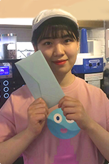
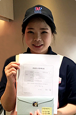

배스킨라빈스의 점포를 칭찬해주세요! 고객 여러분의 칭찬과 격려에 감사 드립니다!
2017년 1분기 BEST 칭찬점포를 소개합니다. 고객 여러분의 칭찬과 격려에 감사 드립니다!
‘2017년 1분기’ Best 칭찬점포 기간
-
칭찬점포1 성북종앙점을 칭찬합니다
17년 설 명절 당일 가족들과 함께 식사를 마치고 아이스크림으로 디저트를 하기 위해 배스킨라빈스에 방문했습니다. 추운 겨울에 먹는 배스킨은 더 맛있거든요~!
저도 배스킨에서 아르바이트를 해봤지만 쿼터 3개를 담는 것은 여간 힘든 일이 아닙니다. 그러나 저의 주문을 받은 여직원은 밝은 미소와 기분 좋게 하는 리 액션을 통해서 저에게 부담스럽게 하지도 않아주셨고, 오히려 기다리는 시간이 길게 느껴지지도 않았습니다. 아이스크림을 다 퍼서 포장하는 과정에 어르신들이 좋아하는 쿼터 통은 표시를 해달라고 했고 저희는 계산을 한 뒤에 쿼터 3개를 받아 집으로 돌아왔습니다.
세 개중 어느 것이 어른들의 입맛에 맞춰진 것인지 확인하려는데 따로 표시를 해놓았더군요. 덕분에 찾는 것도 쉬웠고, 가족 모두 기분 좋게 아이스크림을 먹을 수 있었습니다.
-
칭찬점포2 일산식사점을 칭찬합니다
안녕하세요, 저는 평소 식사점 배스킨라빈스를 이용하는 위시티2단지 거주자입니다! 다름이 아니라 설 연휴 때 아이스크림 배달을 너무 기분 좋게 받아서 처음으로 이렇게 글을 남겨요 그날따라 날씨가 되게 춥기도 했고 시간도 되게 늦어서 아이스크림 배달을 문의했었습니다!
사람도 되게 많았을 텐데 전화 받으셨던 직원 분이 굉장히 친절하시더라고요~ 설이라 배달이 안되는데가 많은데도 직접 전화해서 알아봐주시고 다시 전화를 걸어서 주문까지 받아주시고 제일 감동이었던 건 신제품을 맛보라고 새로운 맛을 조금 더 추가해서 주셨더라고요. 패밀리를 시켰는데 여섯가지맛이 와서 정말 놀랐습니다.
직원 분의 센스와 일일이 전화해서 배달까지 받아주시는 친절함에 가족들과 기분 좋게 설을 보냈네요. 식사 배스킨점의 배달서비스와 항상 웃으시면서 받아주시는 모든 직원 분들을 칭찬하고 싶어요. 앞으로도 배달 많이 이용하겠습니다~!!
-
칭찬점포3 서울대입구점을 칭찬합니다
매장 들어가서부터 직원 분의 기분 좋은 목소리의 맞이 인사에 기분이 살짝 좋아졌습니다.
콘으로 고르고 아이스크림을 고르는데 제가 작은 소리로 친구한테 내가 찾는 제품이 없다고 하며 찾고 있었는데 직원 분께서 그 제품이 지금 왜 없는지 친절히 설명도 해주시고 아이스크림도 꽉 차고 예쁘게 떨어지지 않게 잘 담아주시고 행동 하나하나에 친절멘트와 점포 입점시부터 퇴점시까지 내내 웃는 모습과 친절한 목소리로 응대해주셔서 구매하는 시간이 정말 행복했습니다.
저희 둘 다 매장에 나와서부터 1시간이 지나도 그 직원 분 얘길 하면서 칭찬 글 접수를 위해 다시 점포에 가서 그분 성함을 여쭤보려 했으나 15일 저녁 7시 45분경 여성직원 분 혼자 계셨습니다. 그 분을 찾아 꼭 칭찬해주셨으면 좋겠습니다.
-
칭찬점포4 별내북부점을 칭찬합니다
오늘 쿼터 9,900원 구매하러 들렀는데 손님이 많더라고요~
근무하시는 분이 혼자였는데 손님이 밀려도 힘든 내색 없이 하나하나 응대하시고 쿠폰 못 받으시는 분들에게는 친절하게 직접 해드리고 바쁜 와중에도 맛 하나하나 설명을 잘 해주셨어요, 일하시는 분이 한 분 한 분께 “오래 기다리셨죠~죄송합니다”라고 말씀하시는데 그 얘기 들으니까 기다리는 시간도 짜증나지 않고 혼자서 참 힘드시겠다 생각도 들었어요.
집에 와서 보니 바쁜 와중에 아이스크림 정확하게 나누어 주셔서 모든 맛을 골고루 섞이지 않고 잘 먹었네요.
-
칭찬점포5 중랑구청점을 칭찬합니다
오늘 방문한 매장에서 아이스크림을 주문하던 당시, 직원 분이 취객 고객을 응대했는데 매장 내 소음으로 인해서 고객이 주문한 제품을 직원이 듣지 못하였고, 그분 역시 적극적으로 직원과 눈을 맞추고 얘기하려고 하기 보다는 혼잣말을 하는 정도로 말씀하셔서 의사소통이 잘 되지 않았어요.
나중에 아이스크림을 포장하려던 직원에게 그 아주머니가 "왜 내 얘기를 못 들었느냐"라는 말부터 시작하여 직원에게 언성을 높여 얘기하기 시작하였고 곧 그분의 남편까지 앞으로 나와 술김에 큰 소리로 화를 내시며 사장님과의 인연을 언급하는 발언을 하기도 했습니다. 다른 고객들이 있는 상황에서 공개적으로 좋지 않은 분위기가 조성되었고 직원 분은 재차 죄송하다는 말과 함께 상황을 잘 해결하려고 하는 모습을 보여주셨어요.
그 분위기에서 프로처럼 상황을 잘 넘어가준 직원에게 고맙다는 인사 전해주셨으면 좋겠어요.
-
칭찬점포6 판교테크노점을 칭찬합니다
회사 생활 하면서 이런저런 스트레스 받다 보니 단것을 좋아해서 배스킨라빈스를 자주 이용하는데 직원 분이 너무 친절하게 블라스트를 주실 때 맛은 괜찮냐고 물어봐 주시고 점심시간에 직장인들 몰려서 바쁘신데도 늘 웃으면서 서비스 해주세요 .
오늘은 제가 늘 먹던 카푸치노 블라스트가 아닌 모카 블라스트를 주문했는데 너무 죄송했지만 조금 달아서 직원 분께 다가가 조심스레 말씀 드리니 맛 한번 보시고 원래 단 음료라 너무 단 맛이 싫으시면 앞으로 카푸치노 오리지널로 드셔야 한다고 말씀해주시고 음료를 덜 달게 다시 제조해주셨어요, 물론 꼭 제 입맛에 안 맞는다고 다시 제조해준 게 당연하다 생각하진 않습니다. 아이스크림 가게도 사업이고 다시 만들면 한잔의 음료원가가 더 들어가는 거니까요.
"그치만 너무 달다, 앞으로 먹지 말아야지" 라는 생각으로 베스킨라빈스에 발걸음을 끊게 만드는 게 아니라 “이건 너무 단맛이니까 앞으로 직원 분이 추천해주신 이걸 먹어야겠다" 라는 생각에 더 자주 갈 것 같아요.
-
칭찬점포7 중동현대점을 칭찬합니다

쿼터 할인행사를 보고 들어갔는데 쿠폰이 있어야 한다고 하더라고요.
저는 잘 몰랐는데 바쁜 저녁시간인데도 친절하게 설명해주시고 결국 아이디랑 비번 생각 못해서 그냥 파인트 사먹을라고 했는데 직원 분이 본인껄로 직접 행사 적용을 해주셨어요.
행사 많이 하니깐 해피앱 다운 받아 놓으라고도 말씀해주시고 너무 감동적이었습니다. 두 분 다 여자분이셨는데 밝은 미소와 웃음도 많으시고 너무 친절하십니다. 제가 지금까지 갔던 매장 중 최고로 친절하신 거 같아요. 지역카페에도 글 올리고 많이 방문하도록 앞장서겠습니다~!
-
칭찬점포8 전남고흥점을 칭찬합니다
배스킨라빈스 고흥점에 들어가면 인사도 잘해주고 항상 갈 때마다 웃는 얼굴로 대해주고 제가 기프티콘 사용도 잘 못하는데 물어보면 짜증내는 기색 없이 친절하게 알려주세요.
아이를 데리고 갔을 때 아이스크림도 직원 분이 직접 챙겨서 자리까지 가져다 주시고 세심한 물 티슈도 챙겨주셔서 너무 감동을 받았어요, 저도 장애인인데 힘든 상황에서 내색 않고 시종일관 밝은 모습으로 웃으면서 미소가 떠나지 않는 게 너무 대단하다고 생각할 정도입니다.
그 직원 분이 매장 안의 분위기 자체를 환하게 비춰주는 거 같아요, 그 직원으로 인해 제가 받은 교훈이 더 힘이 나고 살아나오는데 뿌듯하고 좋더구요, 어떻게 저렇게 즐겁고 기쁘게 일할 수 있지 싶을 정도로 밝고 제일 중요한게 인사인데 다른 손님이 와도 똑같이 밝은 미소로 대해주는 모습이 좋아요.
-
칭찬점포9 경북의성점을 칭찬합니다

원래 남편은 아이스크림 이름도 모르고 아는 거라고는 바닐라 본인이 좋아하는 아이스크림 이름 밖에 모르는 사람이에요, 그런데 집에 사온걸 보니 우리가족이 먹는 아이스크림 맛을 다 맞게 사왔더라구요~ 남편 말을 들어보니 아이스크림을 사려고 가게에 들어가서 저에게 전화를 하니 계속 안받아서 계속 서성이고 있었대요. 잠깐 외출 했었는데 그때 사러 갔었더군요. 그렇게 기다리다가 안되겠다 싶어 나오려 했는데 남자 사장님이 어떤 것 때문에 그러시냐고 도와주겠다고 하셨대요
그래서 남편이 아이스크림을 사러 왔는데 이름은 잘 모르겠고 와이프도 전화도 안받는다고 이차저차 설명을 했다고 해요. 그러더니 사장님이 웃으면서 도와준다고 하며 남편이 아이스크림 고르는걸 계속 도와주셨다고 하시더라고요. 남편 말로는 조그만 한 숟가락으로 진열 된 아이스크림을 하나씩 다 먹어 보면서 한 개씩 다 설명해주시고 귀찮은 내색 없이 다 해주셨다고 하더라고요~
그리고 구매를 마친 후에는 날씨가 춥다며 따뜻한 커피까지 한잔 그냥 주시면서 다음에 오실 때는 아이스크림 맛을 다 기억 해놨으니 걱정하지 마시고 자주 들리시라고 얘기 하셨대요. 남편이 시골사람이라 무뚝뚝하고 그런 곳에 가서 혼자 구매를 잘 못하는데 그런 경험이 처음이라 그런지 되게 인상 깊었나 봐요.
-
칭찬점포10 강원횡성점을 칭찬합니다
뜻 깊은 여행을 위해 펜션을 가는 도중 횡성에서 아이스크림 케익을 구매하였습니다. 신년 맞이와 함께 아이스크림 케익에 초도 꽂아 사진도 찍고 먹기도 하였습니다. 생각보다 많이 먹지 못하여 냉동 보관하였지만 막상 일어나서 집으로 발길을 가려 하니 아이스크림 케익이 다 녹아 내릴까 조마조마하였습니다.
드라이아이스를 얻고자 조금이나마 돌아가는 길을 택하여 아이스크림을 구매했던 횡성 점으로 발길을 향했습니다. 30분이 걸려 도착하여 직원 분께 드라이아이스를 좀 얻겠다고 하니 얼마나 필요하시냐고 물어보시더니 최대한 아이스크림 케익이 녹지 않게 드라이아이스를 많이 넣어주셨고 포장 또한 예쁘게 해주셨습니다. 시간이 많이 지나 밤에 집에 도착하였지만 아이스크림이 녹았을 거라는 생각에 버릴 생각으로 열어보니 하나도 녹지 않고 냉동상태 그대로 있는 것에 너무 고마웠습니다.
도와주셨던 직원 분께 보상을 드리고 싶지만 해드릴 수 있는데 칭찬글이라고 생각되어 이렇게 글을 적어봅니다.
칭찬점포1 성북종암점
성북종암점을 칭찬합니다.
17년 설 명절 당일 가족들과 함께 식사를 마치고 아이스크림으로 디저트를 하기 위해 배스킨라빈스에 방문했습니다. 추운 겨울에 먹는 배스킨은 더 맛있거든요~!
저도 배스킨에서 아르바이트를 해봤지만 쿼터 3개를 담는 것은 여간 힘든 일이 아닙니다. 그러나 저의 주문을 받은 여직원은 밝은 미소와 기분 좋게 하는 리 액션을 통해서 저에게 부담스럽게 하지도 않아주셨고, 오히려 기다리는 시간이 길게 느껴지지도 않았습니다. 아이스크림을 다 퍼서 포장하는 과정에 어르신들이 좋아하는 쿼터 통은 표시를 해달라고 했고 저희는 계산을 한 뒤에 쿼터 3개를 받아 집으로 돌아왔습니다.
세 개중 어느 것이 어른들의 입맛에 맞춰진 것인지 확인하려는데 따로 표시를 해놓았더군요. 덕분에 찾는 것도 쉬웠고, 가족 모두 기분 좋게 아이스크림을 먹을 수 있었습니다.